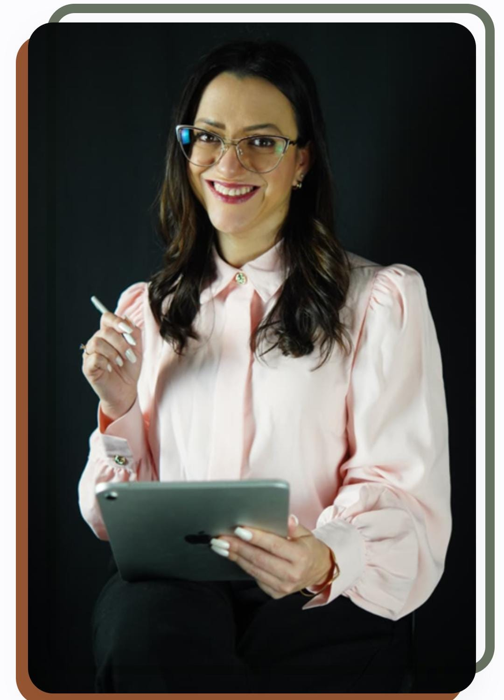

Psicóloga das Ovelhas
E não vos conformeis com este mundo, mas transformai-vos pela renovação da vossa mente, para que experimenteis a boa, agradável, e perfeita vontade de Deus.
— Romanos 12:2A qualidade de vida que você deseja começa pela renovação da sua mente.

Andressa dos Santos Vidart • CRP 07/40949
Olá, sou Andressa Vidart, especialista em Terapia Cognitivo Comportamental (TCC), com experiência no atendimento de cristãos evangélicos e protestantes — incluindo pastores e líderes. Estou aqui para ajudar você a enfrentar desafios, lidar com questões emocionais e encontrar equilíbrio entre mente, emoções e fé.
Amo sentar com pessoas e ouvir suas histórias. Fui casada por 18 anos, fui mãe de três pets. Já tive ao meu lado uma mãe, um irmão, um avô e amigos muito queridos — cada uma dessas vivências compõe a história da minha vida, mas nenhuma delas a define por completo.
O que verdadeiramente me define é saber que sou filha amada de Deus. Essa identidade me empodera e dá sentido a tudo. Sou apaixonada por assuntos eclesiásticos e teológicos, e mais do que uma profissão, vejo minha atuação como um chamado — ao usar o conhecimento científico para os propósitos divinos.
CRP 07/40949A TCC é uma das abordagens terapêuticas mais eficazes e com maior base científica. Trabalhamos juntos para identificar e transformar padrões de pensamento que prejudicam sua qualidade de vida.
Atendo adolescentes e adultos, de forma individual, online ou presencialmente em Novo Hamburgo/RS.
Especializada no atendimento de cristãos evangélicos e protestantes, incluindo pastores, líderes e suas famílias. Integrando ciência e fé de forma respeitosa e bíblica.
Entendo as particularidades da vida dentro da igreja e do ministério — sem julgamentos, com acolhimento genuíno.
Acompanhamento personalizado para quem busca clareza na carreira, na vocação e no propósito. Unindo autoconhecimento, dons e chamado divino para tomar decisões com mais segurança.
Palestras e rodas de conversa dinâmicas sobre saúde mental, renovação da mente e bem-estar emocional — adaptadas para cada público e contexto.
Grupos terapêuticos para mulheres — um espaço de acolhimento, partilha e crescimento emocional. Um ambiente seguro para ser você mesma, sem máscaras.
Com uma trajetória pessoal marcada por perdas significativas — mãe, irmão, relacionamento — Andressa acolhe com empatia e experiência quem atravessa o luto de qualquer tipo.
Ninguém precisa passar por isso sozinho. A dor pode ser transformada em crescimento.
Atendimento individual com foco em TCC para adolescentes e adultos, ajudando a superar ansiedade, depressão, luto e outros desafios emocionais.
Terapia especializada para cristãos evangélicos, pastores e líderes — integrando ciência e fé para cuidar da saúde mental com fundamento bíblico.
Palestras e pregações em igrejas, grupos terapêuticos e eventos femininos sobre saúde mental, renovação da mente e identidade em Cristo.
Atendimento psicológico para instituições, igrejas e grupos — promovendo saúde mental coletiva e bem-estar nas comunidades de fé.
Grupos terapêuticos para mulheres — espaço de acolhimento, crescimento emocional e fortalecimento da identidade feminina em Cristo.
Consultas online de onde você estiver, ou presencialmente em Novo Hamburgo/RS. Flexibilidade para você escolher o formato ideal para sua jornada.
Acompanhamento personalizado para quem busca clareza na carreira e na vocação — integrando propósito, dons e chamado divino.
Palestras e rodas de conversa para Igrejas, Empresas, Escolas, ONGs e Instituições — promovendo saúde mental e renovação da mente.
Porque Deus não nos deu espírito de covardia, mas de poder, de amor e de moderação. — 2 Timóteo 1:7
Mulheres
Igrejas
Adolescentes
Adultos
Pastores & Líderes
Cristãos Evangélicos
💻 Online — de onde você estiver | 📍 Presencial — Novo Hamburgo/RS
A Andressa tem um dom especial de escutar sem julgamento. Me sinto acolhida e entendida em cada sessão. A terapia mudou minha forma de enxergar a mim mesma e minha fé.
Como pastor, carreguei por anos o peso de não poder demonstrar fraqueza. A Andressa me ajudou a entender que cuidar da mente é também cuidar do ministério. Transformador!
A palestra na nossa igreja foi incrível! Andressa trouxe a saúde mental de um jeito bíblico e prático. Nossa comunidade foi muito impactada. Recomendo muito!
Cuidar da mente é um ato de fé. Estou aqui para caminhar com você nessa jornada de renovação.
Falar pelo WhatsApp"Senhor, estou aqui para Te adorar
Tua presença desejo estar
Eu sei que nada sou, mas me humilhar
Preciso de Ti, vem me restaurar..."